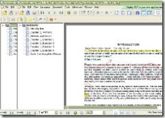
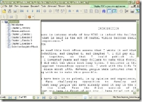
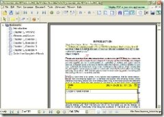
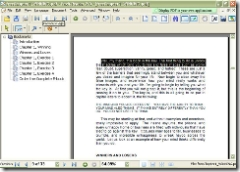
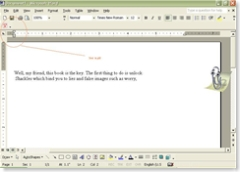

पिछले दिनों मैने इसकी स्पीड बढ़ाने के चक्कर में इसके Plug-ins को उसके फोल्डर में से निकाल कर दूसरे फोल्डर में डाल दिया था जिससे स्पीड तो बहुत तेज हो गई पर प्रिन्ट प्रिव्यू या प्रिन्ट पर क्लिक करते ही कम्प्यूटर हैंग होने लगा। अनईन्सटाल कर फिर से इन्स्टाल करना भी कोई काम नहीं आया। और मुझे परेशानी होने लगी। किसी ने राय दी की आप कोई दूसरा पी डी एफ रीडर इन्स्टाल कर लीजिये पर मुझे बात समझ में नहीं आई क्यों कि मैं अब तक पीडीएफ को एक्रोबेट रीडर का एक भाग समझता रहा था।
तभी एक दिन शास्त्रीजी के चिट्ठे सारथी पर एक लेख यह किस देश- प्रदेश की हिन्दी है?? पर विपुल जैन जी की टिप्प्णी नजर आई, नया नाम देख कर उस पर क्लिक किया तो एक मजेदार साईट खुली।
इस साईट को देख कर मन खुश हो गया बहुत सारे सोफ्टवेर और उनके लिंक यहाँ मिले पर आश्चर्य ; सारे के सारे लिंक हिन्दी में थे ( किसी भी तरह के सोफ्टवेर के लिये शायद हिन्दी में एकमात्र साईट है।)
कुछ देर देखने पर मुझे नजर आया पीडीएफ (२) मैने उस पर क्लिक किया तो वहाँ एक तो एक्रोबेट रीडर 8 और दूसरा Foxit Reader 2.0.1606 मैने देखा कि एक्रो. री. की साईज थी 20Mb; वहीं फॉक्सइट की की मात्र 1.67Mb। मैने फटाफट उसे डाउनलोड कर लिया। साईज छॊटी होने और कुछ नया जानने की उत्सुकता में फॉक्सइट को इन्स्टाल करने से पहले तो एक्रोबेट रीडर7 को अनइंस्टाल भी कर दिया। इन्स्टाल करने के बाद जब इसका परिणाम देखा तो मन खुश हो गया और लगा कि एक्रो . को निकाल कर कोई गलती नहीं की।
फॉक्सइट इन्स्टाल होने के बाद हार्ड डिस्क पर मात्र 3.91Mb जगह रोकता है । इतना ही नहीं बड़ी से बड़ी फाइलें मात्र कुछ सैकण्ड में खुल रही थी, और सुविधाओं का तो कोई हिसाब ही नहीं।
देखिये उदाहरण
- पीडीएफ राईटर इनबिल्ट है। अलग से पीडीएफ राईटर इन्सटाल करने की जरूरत ही नहीं। नीचे दिये फोटो में सबसे उपर Sagar Chand Nahar, Spider.. The Web House जिसे मैने इसके टाइपराईटर टूल की सहायता से लिखा है।

- बहुत सारे टूल्स है , जिनकी मदद से किसी मैटर को अलग अलग चिन्हों से चिन्हित कर सकते हैं। मसलन पेन्सिल टूल, रबर टूल, क्लाऊडी टूल, सर्कल , एलीप्स, पोलीगोन , पोलीगोन लाईन्स, स्कवैयर , डाईमेन्सनल, रिक्टेन्गल आदि है । इनकी मदद से मैटर पर तीर, सर्कल, बादलाकार सर्कल, वर्ग और आयत और कई तरह के चिन्ह बना सकते हैं और रबर टूल से उन चिन्हों को मिटा भी सकते हैं।
- हाईलाइट टूल जिससे किसी खास लाईन को पीले रंग के बेकग्राउन्ड से खास दर्शा सकते हैं। अन्डरलाईन टूल से लाईनों को अन्दरलाईन कर सकते हैं।
- स्ट्राईक आउट टूल जिससे आप लिखे को काट सकते हैं।
- नोटपेड टूल जिससे आप किसी खास स्थान पर कुछ नोट लगा सकते हैं ( कुछ लिख सकते हैं और जिसको मैटर को छेड़छाड़ किये बिना बाद में पढ़ सकते हैं)
- टेक्स्ट व्यू में मैटर को साधारण नोटपेड की तरह देखा जा सकता है।


- मैटर को कॉपी कर आसानी से एम एस वर्ड , एक्सेल या पावर पोईन्ट में पेस्ट कर सकते हैं। और मैटर को टेक्स्ट फाईल में बदल सकते हैं।

- इसे इन्स्टाल करने के बाद एम एस वर्ड में उपर एक बटन दिखने लगता है जिस पर क्लिक करने से हम टेक्स्ट फाइल को पीडीएफ में बदल सकते हैं।


- फुल स्क्रीन व्यू में एक फोटो की तरह या पावर पोइन्ट प्रजेन्टेशन के स्लाईड शो की तरह मैटर को देख सकते हैं।
- पेज को क्लोक वाइज और एन्टिक्लोक वाइज घुमा भी सकते हैं।
- Ctrl+F कर मैटर में से किसी विशेष शब्द को ढूंढ सकते हैं। ( हिन्दी में नहीं)
- सबसे महत्वपूर्ण बात यह है कि फ्रीवेयर है।तो आप भी फॉक्सईट रीडर का लुत्फ उठाईये और एक्रोबेट रीडर से मुक्ति पाईये। आईये इस मस्त साईट से और भी मजेदार सोफ्ट वेर डाउनलोड करते हैं।
शास्त्रीजी को लेख लिखने के लिये धन्यवाद जिससे यह मतवपूर्ण साइट पता चली। विपुल जैन जी को तो विशेष धन्यवाद जिन्होने मुझ जैसे मात्र हिन्दी के जानकारों के लिये हिन्दी में साईट बनाकर इतना अच्छा काम कियातो आप भी फॉक्सईट रीडर का लुत्फ उठाईये और एक्रोबेट रीडर से मुक्ति पाईये। आईये इस मस्त साईट से और भी मजेदार सोफ्ट वेर डाउनलोड करते हैं।
शास्त्रीजी को लेख लिखने के लिये धन्यवाद जिससे यह मतवपूर्ण साइट पता चली। विपुल जैन जी को तो विशेष धन्यवाद जिन्होने मुझ जैसे मात्र हिन्दी के जानकारों के लिये हिन्दी में साईट बनाकर इतना अच्छा काम किया
- टिप्पणी...
written by श्रीश शर्मा, मई 31, 2007
हाँ जी बहुत झकास चीज है। हम भी लंबे समय से इसके पंखे हैं। कभी इस पर रिव्यूयाएंगे। smilies/smiley.gif (original image)सहमत
written by Sanjeet Tripathi, जून 01, 2007
शुक्रिया।
मैं पिछले छह महीने से इसका उपयोग कर रहा हूं। बेहतर लगा।सही मसाला
written by ज्ञानदत्त पाण्डेय, जून 01, 2007
धन्यवाद नाहर जी. http://hi.mustdownloads.com/ का पता बताने के लिये. वहां तो ढेर सारा है क सामान है खुराफात के लिये!